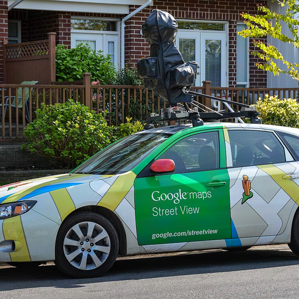
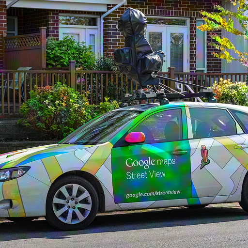
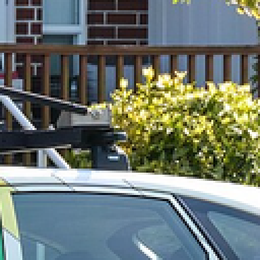
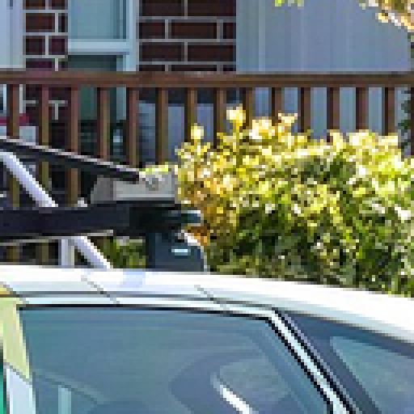
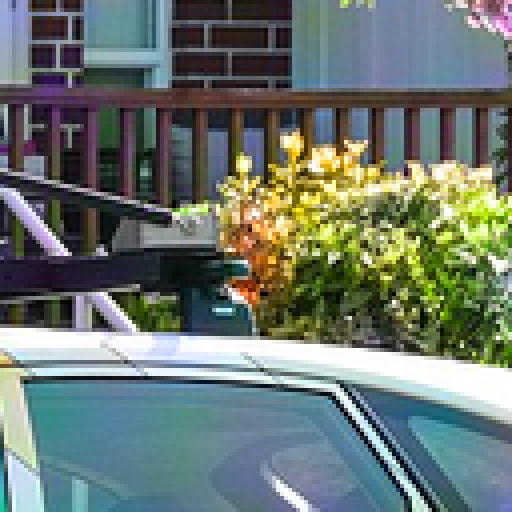
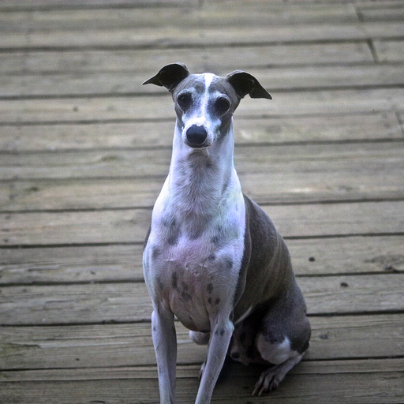
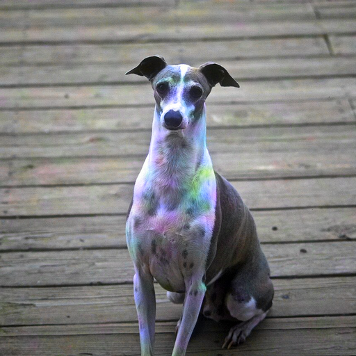
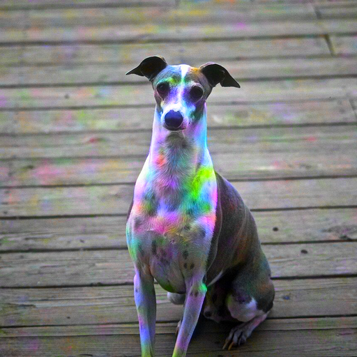
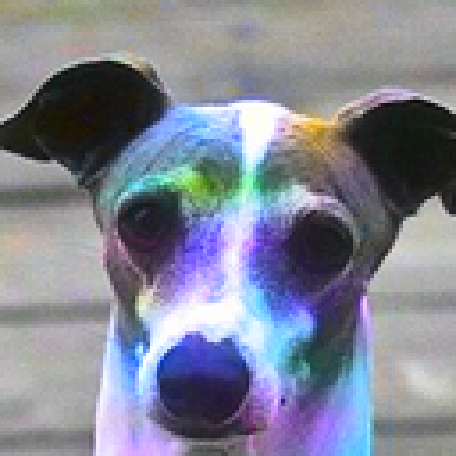

car_00
只有色度偏壓在變，亮度與結構不動







展開數值（先看圖）
| 級 | 實得偏壓 | LPIPS |
|---|---|---|
| 0.3 | 0.300 | 0.0008 |
| 0.6 | 0.600 | 0.0030 |
| 1.0 | 1.000 | 0.0078 |
| 1.5 | 1.500 | 0.0164 |
| 2.5 | 2.500 | 0.0399 |
| 4.0 | 4.000 | 0.0846 |
每一級只有色度偏壓在變，亮度與結構完全不動，用的是
site C 自己的參數化。請按數字鍵（或點按鈕）與原圖來回切換，
指出從哪一級開始你看得出差別。
兩個已知的錨點：site P 的防禦圖在偏壓 0.30–0.33（你判讀為看不出來），
site C 的在 3.94–6.00（你判讀為有色調偏移）。中間這幾級沒有人看過。
另外量到 100 步的加性基準在一張圖上達 1.01，所以門檻若定得比 1.0 低，
會連加性基準都擋掉、比較就不成立——這一級請特別看。
右側為 4× 最近鄰放大，位置取原圖梯度能量最高處，各級同一座標。





| 級 | 實得偏壓 | LPIPS |
|---|---|---|
| 0.3 | 0.300 | 0.0008 |
| 0.6 | 0.600 | 0.0030 |
| 1.0 | 1.000 | 0.0078 |
| 1.5 | 1.500 | 0.0164 |
| 2.5 | 2.500 | 0.0399 |
| 4.0 | 4.000 | 0.0846 |






| 級 | 實得偏壓 | LPIPS |
|---|---|---|
| 0.3 | 0.300 | 0.0035 |
| 0.6 | 0.600 | 0.0142 |
| 1.0 | 1.000 | 0.0367 |
| 1.5 | 1.500 | 0.0704 |
| 2.5 | 2.500 | 0.1335 |
| 4.0 | 4.000 | 0.2109 |


| 級 | 實得偏壓 | LPIPS |
|---|---|---|
| 0.3 | 0.300 | 0.0041 |
| 0.6 | 0.600 | 0.0155 |
| 1.0 | 1.000 | 0.0370 |
| 1.5 | 1.500 | 0.0674 |
| 2.5 | 2.500 | 0.1285 |
| 4.0 | 4.000 | 0.2103 |